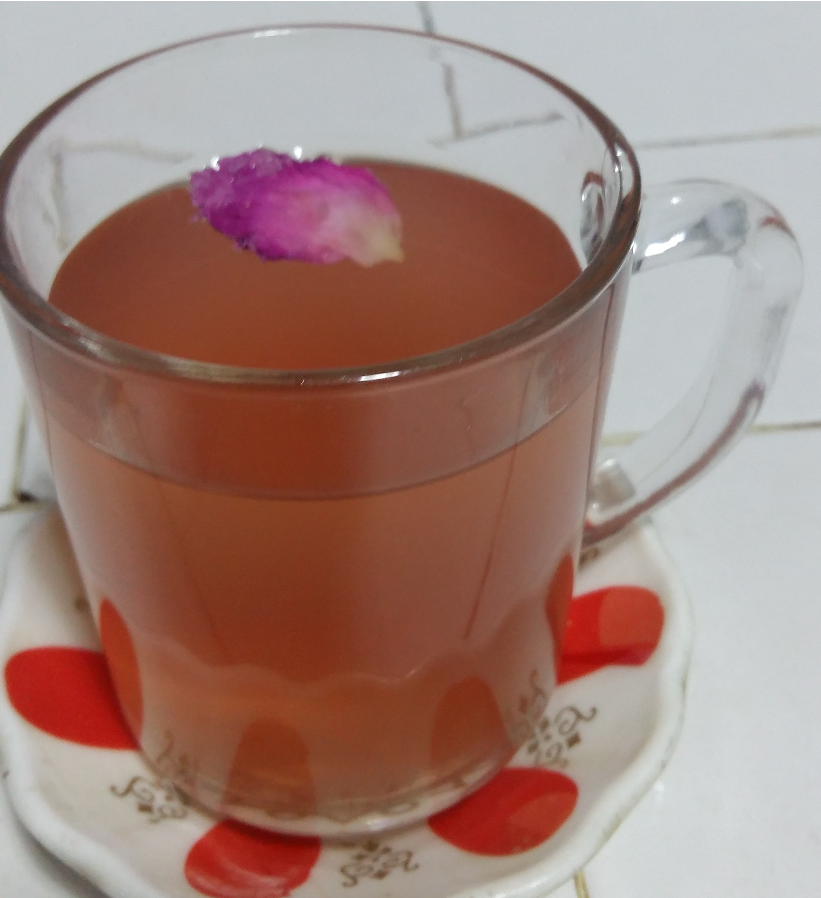

Osmanlı Gül Şerbeti
Çok az malzeme ile yapabileceğiniz Osmanlı Gül Şerbeti tarifini öğrenmek için okumaya devam edin.
Malzemeler
- 4 yemek kaşığı gül reçeli
- 1 su bardağı su
Yapılışı
- Suya reçel eklenir ve reçel eriyene kadar karıştırılır.
- Buzdolabında soğutulmuş şekilde servis edilir.
Afiyet Olsun
